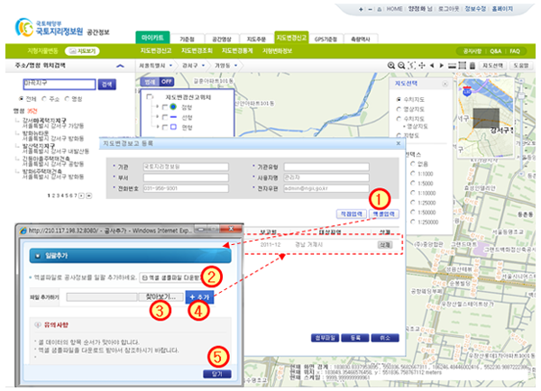

지형지물변동 > 지도변경신고 > 기관신고 > 신규등록 > 엑셀입력
| ① | 지도변경보고 등록창에서 [엑셀입력] 버튼을 클릭하면 일괄추가 창이 나타난다 |
| ② | [엑셀 샘플파일 다운받기] : 엑셀 일괄입력 양식을 다운로드 한다.(도움말 참고) |
| ③ | [찾아보기] : 일괄 작성된 엑셀자료를 선택한다. |
| ④ | [추가] : 선택한 엑셀자료의 내용이 지도변경보고 등록 목록에 표시된다. |
| ⑤ | [닫기] : 일괄추가 창이 종료되고 지도변경보고 등록 창으로 돌아간다.(15페이지 참조) |